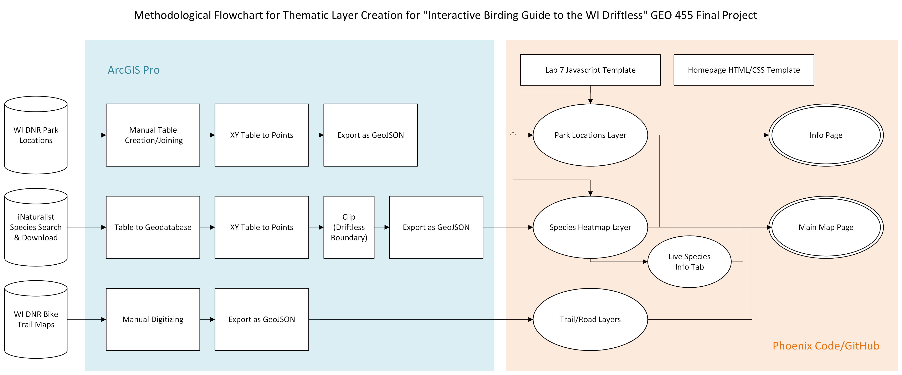

by Finn Patenaude - Geography and Environmental Science Major, University of Wisconsin – La Crosse (Spring 2026)
The area referred to as the "Driftless" is a 24,000 square-mile region in the Midwestern United States. Shared between Western Wisconsin, Southeastern Minnesota, Northeastern Iowa and Northwestern Illinois, it is a landscape that escapes the constraints of local boundaries.
The driftless area was never covered by the Last Glacial Period, and thus it's landscape is characterized by steep hills, forested ridges, deeply carved river valleys and karst geology. The Driftless Area has been designated it's own USDA Level III ecoregion, codifying it's unique economic and cultural characteristics.
The flora and fauna here are more closely related to those of the Great Lakes and New England regions than that of the neighboring Central Plains or greater Midwest. This unique and variable geography provides crucial habitat for many species, including many resident and migratory birds.
This project was created as an all-inclusive place to plan your birding adventures within the beautiful Wisconsin Driftless Region. Providing you with icons to represent parks in the area as well as heatmaps for multiple of the area's most iconic bird species.
This webmap is intended for both local residents and visitors alike. While many birders seek out specific species, some travellers may be more interested in seeing what birds overlap their favorite parks or near their homes. This map provides the tools for either user to see what birds are out there and where they might have the best chance of seeing them.
Allowing the public to have access to data such as this iNaturalist observation data in a format that is digestible and user-friendly makes it easier to develop an attachment and care for the beautiful creatures and places around us. Allowing the everyday to be exciting and making your next adventure planning accessible means more people will be outside experiencing the Driftless Region. Meaning more people will protect it and preserve it for future generations.
This is a map of local bird sightings and local recreational infrastructure.This map allows users to visually compare the locations of previous bird sightings with bike trails, scenic byways and regional parks that might help them view our feathered friends. After viewing this map, users should be inspired to go out and explore the Driftless Region. This map is designed for local residents and tourists alike. Bringing the hobby of birding to all those interested in learning more.
Key datasets for this project include iNaturalist.org (species sighting data) and Wisconsin DNR (park locations, trail maps and road data). Both websites are hosting all information used in this map open to the public and downloadable. My workflow included specific data preparation for each thematic layer. The following flowchart depicts those independent processes and illustrate the use of both ArcGIS and coding platforms for different pieces of data design.

Web delivery is indicated above, primarily converting data to GeoJSON format and hosting those files in appropriate folders in GitHub. Those GeoJSONs are then accessed via fetch functions and imported into the map's display.
Park Locations/Information - Locations were taken from Wisconsin DNR Mississippi/Chippewa Rivers Region Viewing Guide and manually geocoded, with descriptions and images from WI DNR as well.
Species Heatmap Data - Species sighting data was obtained from iNaturalist.org's custom search feature and downloaded locally.
Bike Trails - Trails were selected from Wisconsin DNR's state trail collection and manually digitized guided by WI DNR pdf maps.
WI Scenic Byways - Road geometry was obtained from Wisconsin Department of Transportation Open Data Portal.
Bird Species control images are all open-source (Creative Commons Licensed) images.
Significance/Strengths - Tourism/recreational infrastructure side-by-side with observation data. Layer control is well-organized, easily accessible and interesting. Multiple heatmaps are not storage intensive and easy fetchable via GEoJSON. Live species information panel is fun and well designed.
Limitations - Manual layer creation/alteration is slow and can be drastically improved (Modelbuilder?). I would like to have included more trails, more roads, more parks, and more species if I had more time. Color coding of the heatmap feels a little off, would also be interesting to have multiple species displayed at once, currently limited to one at a time.
Next Steps - Park polygons in addition to icons, could be added when selected or searched to decrease visual clutter when zoomed out. I would love to integrate a more field guide-esk CSS style, including the main map and info page.
Map Author: Finn Patenaude, Course: UWL GEO 455 - Webmapping, Instructor: Gargi Chauduri
AI was primarily utilized for troubleshooting code and occasional styling instruction.